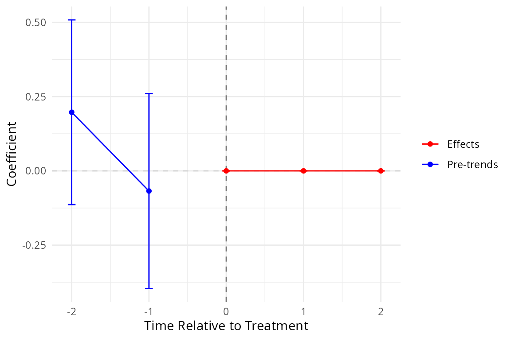
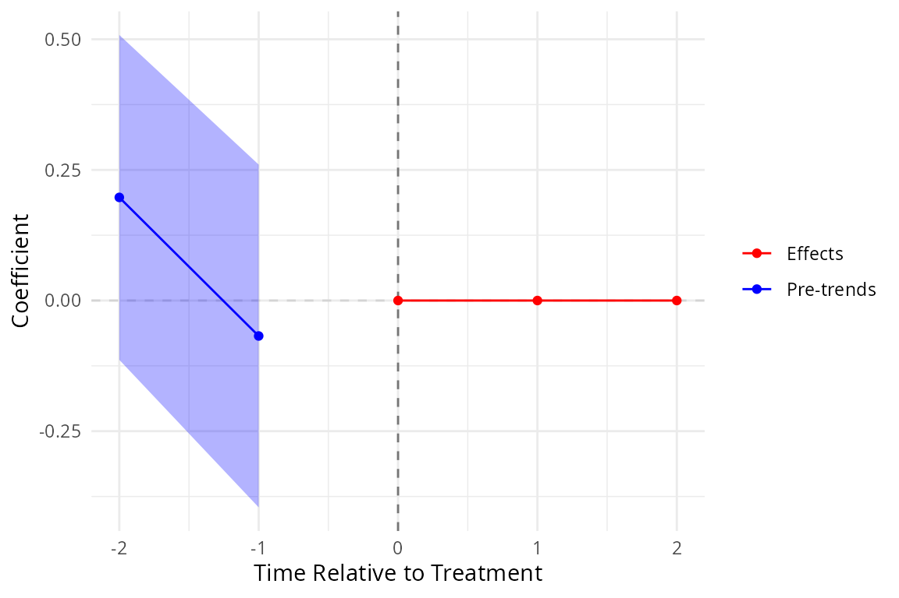

Overview
didimpute implements the imputation estimator of Borusyak, Jaravel and Spiess (2024, Review of Economic Studies) for staggered difference-in-differences (DiD) designs. The estimator proceeds in two steps:
- Fit a two-way fixed effects (TWFE) model on untreated observations to obtain a counterfactual prediction for each treated observation.
- Aggregate the unit-level treatment effects into researcher-specified estimands (average treatment effect on the treated, event-study coefficients, etc.).
Standard errors are cluster-robust and use the smartweights influence-function approach of the original Python package.
Installation
remotes::install_github("xiangao/didimpute")Data format
The estimator requires a long-format panel with:
-
i: unit identifier -
t: time variable (integer-valued) -
Ei: first treated period (NAfor never-treated units) -
y: outcome variable
library(didimpute)
# Synthetic staggered panel: 30 units, 10 periods
set.seed(42)
n_units <- 30; n_t <- 10
panel <- expand.grid(i = seq_len(n_units), t = seq_len(n_t))
# Three treatment cohorts: early (t=5), late (t=7), never-treated
panel$Ei <- ifelse(panel$i <= 10, 5L,
ifelse(panel$i <= 20, 7L, NA_integer_))
# DGP: true effect = 1.5, with cohort heterogeneity
panel$y <- 1.5 * (!is.na(panel$Ei) & panel$t >= panel$Ei) +
0.5 * (panel$i <= 10) * (!is.na(panel$Ei) & panel$t >= panel$Ei) +
rnorm(nrow(panel), sd = 0.5)Baseline estimate
The simplest call returns the average treatment effect on the treated (ATT) pooled across all treated observations.
res_ate <- did_impute(panel, y = "y", i = "i", t = "t", Ei = "Ei")
#> The number of treated entities is too small for some cohorts. Standard Errors may be wrong, consider using avgeffectsby option, averaging the the effect by treated X post variable.
print(res_ate)
#> <didimpute did_impute result>
#> Effects: tau_ate=1.741
#> SE : tau_ate=0.08701
#> N obs: 300Event-study estimates
Pass horizons to estimate separate effects at each
relative-time horizon. Use pretrends to also estimate
placebo pre-trend coefficients.
res <- did_impute(
panel,
y = "y",
i = "i",
t = "t",
Ei = "Ei",
horizons = 0:2,
pretrends = 2
)
#> WARNING: suppressing wtr0, consider lower minn or minn=0.
#> WARNING: suppressing wtr1, consider lower minn or minn=0.
#> WARNING: suppressing wtr2, consider lower minn or minn=0.
summary(res)
#> term estimate std.error
#> 1 tau0 0.00000000 0.0000000
#> 2 tau1 0.00000000 0.0000000
#> 3 tau2 0.00000000 0.0000000
#> 4 pre1 -0.06783874 0.1673345
#> 5 pre2 0.19735697 0.1585843The summary returns a tidy data.frame with one row per
estimand: post-treatment effects (tau0, tau1,
tau2) followed by pre-trend placebo coefficients
(pre1, pre2).
Event-study plot
event_plot() produces a ggplot2 figure with
pre-trends on the left and post-treatment effects on the right.
if (requireNamespace("ggplot2", quietly = TRUE)) {
event_plot(res)
}
The rarea variant draws a shaded confidence band instead
of error bars:
if (requireNamespace("ggplot2", quietly = TRUE)) {
event_plot(res, plot_type = "rarea")
}
Additional options
Horizon-balanced sample (hbalance)
When hbalance = TRUE, the estimator restricts to cohorts
observed at every requested horizon, ensuring a balanced
event-study sample.
res_bal <- did_impute(
panel,
y = "y",
i = "i",
t = "t",
Ei = "Ei",
horizons = 0:2,
hbalance = TRUE
)
#> WARNING: suppressing wtr0, consider lower minn or minn=0.
#> WARNING: suppressing wtr1, consider lower minn or minn=0.
#> WARNING: suppressing wtr2, consider lower minn or minn=0.
summary(res_bal)
#> term estimate std.error
#> 1 tau0 0 0
#> 2 tau1 0 0
#> 3 tau2 0 0All observed horizons (allhorizons)
res_all <- did_impute(
panel,
y = "y",
i = "i",
t = "t",
Ei = "Ei",
allhorizons = TRUE
)
#> WARNING: suppressing wtr0, consider lower minn or minn=0.
#> WARNING: suppressing wtr1, consider lower minn or minn=0.
#> WARNING: suppressing wtr2, consider lower minn or minn=0.
#> WARNING: suppressing wtr3, consider lower minn or minn=0.
#> WARNING: suppressing wtr4, consider lower minn or minn=0.
#> WARNING: suppressing wtr5, consider lower minn or minn=0.
summary(res_all)
#> term estimate std.error
#> 1 tau0 0 0
#> 2 tau1 0 0
#> 3 tau2 0 0
#> 4 tau3 0 0
#> 5 tau4 0 0
#> 6 tau5 0 0Analytic weights
Pass the name of a weight column to aw:
panel$pop <- runif(nrow(panel), 0.5, 1.5) # synthetic population weight
res_w <- did_impute(
panel,
y = "y",
i = "i",
t = "t",
Ei = "Ei",
aw = "pop"
)
#> The number of treated entities is too small for some cohorts. Standard Errors may be wrong, consider using avgeffectsby option, averaging the the effect by treated X post variable.
print(res_w)
#> <didimpute did_impute result>
#> Effects: tau_ate=1.751
#> SE : tau_ate=0.09118
#> N obs: 300Skipping standard errors
For large panels, passing nose = TRUE skips the
(expensive) influence-function SE computation.
res_nose <- did_impute(
panel,
y = "y",
i = "i",
t = "t",
Ei = "Ei",
nose = TRUE
)
#> The number of treated entities is too small for some cohorts. Standard Errors may be wrong, consider using avgeffectsby option, averaging the the effect by treated X post variable.
print(res_nose)
#> <didimpute did_impute result>
#> Effects: tau_ate=1.741
#> N obs: 300The V field
The returned object includes a square covariance matrix
V of dimension
,
where
is the total number of reported estimands (effects, then pre-trends,
then controls, in that order). Row and column names match the estimand
names. sqrt(diag(res$V)) reproduces the reported
per-estimand standard errors to numerical precision. This is a
deliberate improvement over the upstream Python package, whose
V was a scalar (sum of squared standard errors).
V is NULL when nose = TRUE or
when no standard-error components are present.